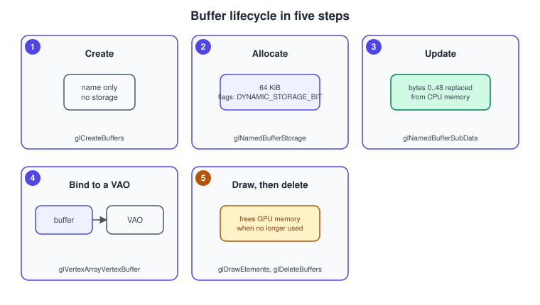
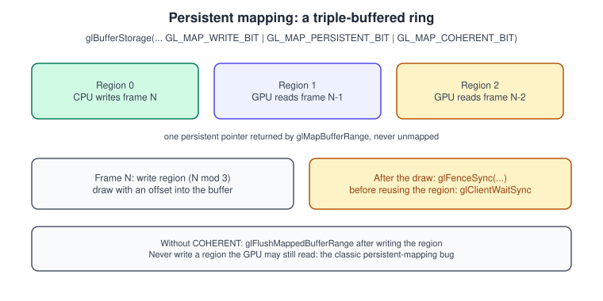
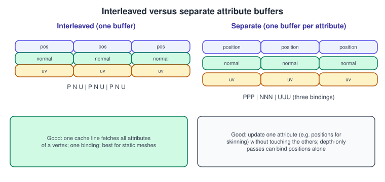
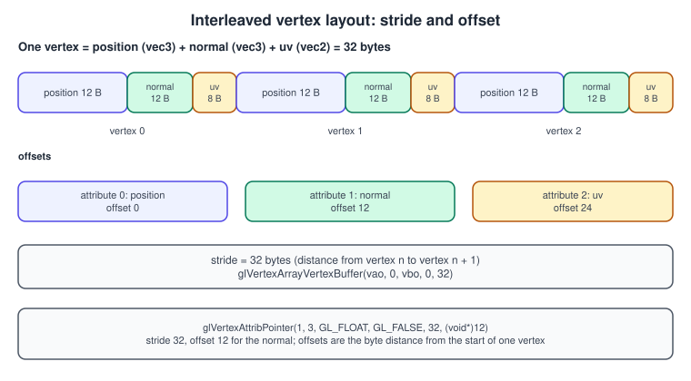
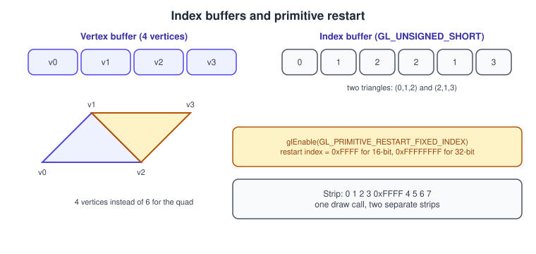

Buffers and Vertex Specification
|
This content was generated with the assistance of AI and should be verified against the official documentation before being relied on in production. |
Every draw call reads its input from memory that the GPU can reach. In OpenGL that memory is a buffer object, an opaque block of bytes owned by the driver, and the way the bytes are split into attributes is described by a vertex array object (VAO). The two together are the "vertex specification" stage at the front of the pipeline. Getting them right is the difference between a mesh that renders, one that renders as spiky garbage and one that stutters because the CPU and GPU keep waiting on each other. This page covers the buffer API in full: creating and filling a buffer, the usage hints, mapping, immutable storage and persistent mapping, then the vertex layout (interleaved versus separate attributes, the two APIs to describe them), index buffers, instancing divisors, the limits and the differences in OpenGL ES.
The facts were checked in November 2026. The versions documented are OpenGL 4.6 (GLSL 4.60) and OpenGL ES 3.2 (GLSL ES 3.20); each feature says in which version it appeared. The examples are C++20 with glad2 and GLFW and use a 4.1 core baseline so that they run on macOS; features that need 4.3, 4.4 or 4.5 are marked and have a fallback. Nothing here needs more than an ordinary OpenGL driver on Windows, Linux or macOS (limited to 4.1 there), and the ES differences are in their own section. The general theory of meshes, index buffers and vertex formats is in Meshes and Vertex Data; the first program that uses a buffer is Hello Triangle.
Buffer objects
A buffer object is created by name (an unsigned integer), allocated with a size and optional initial data, and then used through a binding point (a target) that tells the driver what it will be used for. The same buffer can be bound to different targets at different times.
| Target | Use | Since |
|---|---|---|
|
Vertex attributes (the VBO) |
1.5 |
|
Vertex indices (the EBO); the binding is stored in the VAO |
1.5 |
|
Uniform blocks (see Uniforms, UBOs and SSBOs) |
3.1 (ES 3.0) |
|
Read and write buffers for shaders |
4.3 (ES 3.1) |
|
Draw parameters read by |
4.0 (ES 3.1) |
|
Scratch targets for |
3.1 (ES 3.0) |
|
Asynchronous texture and |
2.1 (ES 3.0) |
|
Captured vertex shader output |
3.0 (ES 3.0) |
|
Specialised uses |
4.2, 4.3, 4.4, 3.1 |
Creating and filling

There are two equivalent API generations.
// Classic (OpenGL 1.5 and newer, works in a 4.1 core context):
GLuint vbo = 0;
glGenBuffers(1, &vbo); // reserves a name; no object exists yet
glBindBuffer(GL_ARRAY_BUFFER, vbo); // creates the object on first bind
glBufferData(GL_ARRAY_BUFFER, sizeof vertices, vertices, GL_STATIC_DRAW);
// Direct state access (OpenGL 4.5): no binding needed.
glCreateBuffers(1, &vbo); // creates the object immediately
glNamedBufferData(vbo, sizeof vertices, vertices, GL_STATIC_DRAW);
// or immutable storage (4.4 and newer, below):
glNamedBufferStorage(vbo, sizeof vertices, vertices, 0);Source: OpenGL 4 reference: glBufferData
glBufferData(target, size, data, usage) (re)allocates the buffer’s data store and copies size bytes from data (which may be a
null pointer to only allocate). Calling it again on the same buffer replaces the store and the old one is released, which is also
what makes it useful for "orphaning" (below). glBufferSubData(target, offset, size, data) replaces a range inside the existing
store without reallocating it. glClearBufferData and glClearBufferSubData (4.3) fill a buffer with a constant, and
glCopyBufferSubData (3.1) copies between buffers without going through the CPU.
Usage hints
The last argument of glBufferData is a hint, built from a frequency and a nature:
| Hint | Written by | Read by | Typical use |
|---|---|---|---|
|
Once by the application |
The GPU for drawing, many times |
Meshes loaded once (the Bookshelf shelf) |
|
Repeatedly by the application |
The GPU for drawing, many times |
Per-frame instance matrices, updated now and then |
|
Once per use by the application |
The GPU for drawing, a few times |
Per-frame particle or UI vertices |
|
The GPU (via transform feedback or compute) |
The application |
Read-back of results |
|
The GPU |
The GPU |
Transform feedback output reused as vertex input |
The hint does not restrict what you can do; it only influences where the driver places the memory (video memory versus system memory visible to both). Modern drivers often ignore it, which is why immutable storage replaced it in 4.4.
Mapping: writing straight into driver memory
glBufferSubData copies from CPU memory you own. Mapping gives you a pointer into the buffer itself, so you can generate data
in place, skipping an intermediate copy. glMapBufferRange(target, offset, length, access) (3.0, ES 3.0) returns the pointer and
glUnmapBuffer ends the access (the contents become visible to the GPU, and the pointer is invalid). The access flags are:
| Flag | Meaning |
|---|---|
|
The pointer may be read, written or both. Reading from memory mapped for writing can be very slow, so map for reading only when you need to. |
|
Previous contents of the mapped range can be discarded. |
|
Previous contents of the whole buffer can be discarded; the driver can hand you fresh memory without waiting for the GPU (orphaning). |
|
You promise to call |
|
Do not wait for GPU work that uses the buffer. You are responsible for not overwriting data in flight. |
|
The mapping stays valid during drawing (see below); needs immutable storage with the same flags (4.4). |
// Update a dynamic buffer with the orphaning pattern: ask for a new store so the GPU can keep using the old one.
void updateInstances(GLuint vbo, const glm::mat4* models, size_t count) {
const GLsizeiptr bytes = static_cast<GLsizeiptr>(count * sizeof(glm::mat4));
glBindBuffer(GL_ARRAY_BUFFER, vbo);
void* p = glMapBufferRange(GL_ARRAY_BUFFER, 0, bytes,
GL_MAP_WRITE_BIT | GL_MAP_INVALIDATE_BUFFER_BIT);
if (p) {
std::memcpy(p, models, static_cast<size_t>(bytes));
glUnmapBuffer(GL_ARRAY_BUFFER); // returns GL_FALSE if the data store was corrupted; re-upload then
}
}Without the invalidate flag, a mapping that the GPU is still reading forces the CPU to wait until it is done, which shows up as a
long stall in glMapBufferRange or glBufferSubData. OpenGL ES 2.0 has only GL_OES_mapbuffer; ES 3.0 provides
glMapBufferRange.
Immutable storage and persistent mapping (OpenGL 4.4)
glBufferStorage(target, size, data, flags) (and glNamedBufferStorage in 4.5) allocates a buffer whose size and flags can never
change. The flags state in advance what you will do, instead of giving a hint:
| Flag | Meaning |
|---|---|
|
The contents may be updated with |
|
The buffer can be mapped for reading or writing. |
|
The mapping can stay in place while the GPU uses the buffer. |
|
Writes through a persistent mapping become visible to the GPU without an explicit flush or barrier. |
|
A hint that the store should be in client (CPU) memory, if the driver has a choice. |
With persistent and coherent mapping you map once and keep the pointer for the lifetime of the buffer. You write the data for the next frame while the GPU reads the previous ones. The only thing left to manage is the synchronisation: never overwrite a part of the buffer the GPU might still be reading.

// OpenGL 4.4: a per-frame ring in one persistently mapped buffer, for dynamic uniforms or instance data.
constexpr int kFramesInFlight = 3;
constexpr GLsizeiptr kRegionSize = 64 * 1024;
GLuint ring = 0;
glCreateBuffers(1, &ring); // 4.5; with 4.4 use glGenBuffers + glBindBuffer + glBufferStorage
const GLbitfield flags = GL_MAP_WRITE_BIT | GL_MAP_PERSISTENT_BIT | GL_MAP_COHERENT_BIT;
glNamedBufferStorage(ring, kRegionSize * kFramesInFlight, nullptr, flags);
auto* base = static_cast<std::byte*>(
glMapNamedBufferRange(ring, 0, kRegionSize * kFramesInFlight, flags));
GLsync fences[kFramesInFlight] = {};
void beginFrame(int frame) {
const int region = frame % kFramesInFlight;
if (fences[region]) { // wait until the GPU has finished with this region
glClientWaitSync(fences[region], GL_SYNC_FLUSH_COMMANDS_BIT, 1'000'000'000);
glDeleteSync(fences[region]);
fences[region] = nullptr;
}
std::byte* dst = base + region * kRegionSize;
// ... write this frame's data into dst, then draw using the offset region * kRegionSize ...
}
void endFrame(int frame) {
fences[frame % kFramesInFlight] = glFenceSync(GL_SYNC_GPU_COMMANDS_COMPLETE, 0);
}Without GL_MAP_COHERENT_BIT, call glFlushMappedBufferRange after writing and glMemoryBarrier(GL_CLIENT_MAPPED_BUFFER_BARRIER_BIT) if
the GPU wrote data the CPU reads. The fence functions are explained in
Sync, Queries and Transform Feedback. Persistent mapping is the
standard technique for streaming large amounts of per-frame data, as described in
Performance. It is not available in ES (core) or on macOS (4.1); there, use
glBufferSubData with orphaning, or glMapBufferRange with GL_MAP_INVALIDATE_BUFFER_BIT. The extension GL_EXT_buffer_storage
provides the same on some ES drivers.
Describing the layout with a VAO
A vertex array object stores the answer to "where does each attribute of a vertex come from?". A vertex attribute is one input of the vertex shader (position, normal, uv). The VAO records, for each attribute index, whether it is enabled, the format (component type, count, normalised or not), and the buffer, stride and offset to read it from. It also records the element-array buffer binding.
Interleaved or separate

-
Interleaved (array of structures): the attributes of one vertex are stored together:
P N U P N U .... The GPU fetches one vertex with one or two memory accesses. It is the default for static meshes and what most loaders produce. -
Separate (structure of arrays): all positions, then all normals, then all uvs, in one buffer or several. It is good when one attribute changes often (skinned positions) or when some passes need only some attributes (a shadow pass reads only positions, saving memory bandwidth).
In both cases the VAO describes the layout with a stride and an offset per attribute. The stride is the byte distance between the start of one vertex and the start of the next for that attribute (0 means "tightly packed, computed from the format" in the classic API). The offset is the byte position of the first element of the attribute inside the buffer (classic API) or inside one vertex (separate format API).

The classic API: glVertexAttribPointer
struct Vertex {
glm::vec3 position; // offset 0
glm::vec3 normal; // offset 12
glm::vec2 uv; // offset 24
}; // sizeof == 32
glGenVertexArrays(1, &vao);
glBindVertexArray(vao);
glBindBuffer(GL_ARRAY_BUFFER, vbo); // captured by each glVertexAttribPointer call below
glEnableVertexAttribArray(0);
glVertexAttribPointer(0, 3, GL_FLOAT, GL_FALSE, sizeof(Vertex), reinterpret_cast<void*>(offsetof(Vertex, position)));
glEnableVertexAttribArray(1);
glVertexAttribPointer(1, 3, GL_FLOAT, GL_FALSE, sizeof(Vertex), reinterpret_cast<void*>(offsetof(Vertex, normal)));
glEnableVertexAttribArray(2);
glVertexAttribPointer(2, 2, GL_FLOAT, GL_FALSE, sizeof(Vertex), reinterpret_cast<void*>(offsetof(Vertex, uv)));
glBindBuffer(GL_ELEMENT_ARRAY_BUFFER, ebo); // this binding is part of the VAO state
glBindVertexArray(0);The data type and normalized flag deserve attention:
| Memory format | Call | Shader sees | Use |
|---|---|---|---|
|
|
|
positions, normals, uvs |
|
|
|
compact positions or uvs |
|
|
|
vertex colours |
|
|
|
bone indices read as floats (avoid) |
|
|
packed |
compressed normals and tangents in 4 bytes |
integer types |
|
|
bone indices, material ids (the shader input must be an integer type) |
|
|
|
rarely used (4.1, desktop only) |
A common mistake is declaring an integer attribute (in ivec4 aBones;) and filling it with glVertexAttribPointer: the data is
converted to float and the shader reads zeros or garbage. Use glVertexAttribIPointer for integer inputs.
If an attribute is not enabled, the shader receives a constant default: glVertexAttrib4f(index, x, y, z, w) sets it (the default
is (0, 0, 0, 1)). This is a cheap way to give a whole draw one colour without a buffer.
The separate format API (OpenGL 4.3)
The classic call fuses four ideas into one: attribute format, the buffer, the stride and the binding of the buffer to the attribute.
OpenGL 4.3 (ES 3.1, and GL_ARB_vertex_attrib_binding) splits them into two tables:
-
Vertex buffer binding points (index 0 to
GL_MAX_VERTEX_ATTRIB_BINDINGS- 1), each with a buffer, an offset and a stride:glBindVertexBuffer(bindingIndex, buffer, offset, stride). -
Attribute formats with a relative offset inside the vertex, and a link to the binding point:
glVertexAttribFormat(index, size, type, normalized, relativeOffset)andglVertexAttribBinding(index, bindingIndex).
// OpenGL 4.3 (ES 3.1): format and binding are separate. Changing buffers later only needs glBindVertexBuffer.
glBindVertexArray(vao);
glEnableVertexAttribArray(0);
glVertexAttribFormat(0, 3, GL_FLOAT, GL_FALSE, offsetof(Vertex, position));
glVertexAttribBinding(0, 0); // attribute 0 reads from binding point 0
glEnableVertexAttribArray(1);
glVertexAttribFormat(1, 3, GL_FLOAT, GL_FALSE, offsetof(Vertex, normal));
glVertexAttribBinding(1, 0);
glEnableVertexAttribArray(2);
glVertexAttribFormat(2, 2, GL_FLOAT, GL_FALSE, offsetof(Vertex, uv));
glVertexAttribBinding(2, 0);
glBindVertexBuffer(0, vbo, /*offset*/ 0, /*stride*/ sizeof(Vertex)); // one buffer for all three attributes
// The same VAO layout can later be pointed at another mesh's buffer with a single call:
// glBindVertexBuffer(0, otherVbo, 0, sizeof(Vertex));The advantage is large when many meshes share one layout: you create one VAO per layout, not per mesh, and switching mesh costs a
single glBindVertexBuffer (plus a binding of the index buffer). The 4.5 direct-state-access versions
(glVertexArrayVertexBuffer, glVertexArrayAttribFormat, glVertexArrayAttribBinding, glEnableVertexArrayAttrib,
glVertexArrayElementBuffer) do the same with no binding of the VAO, as shown in
Direct State Access. Neither the separate format API nor DSA exists in a macOS
4.1 context, so the example project keeps the classic path.
Instancing divisors
By default an attribute advances once per vertex. glVertexAttribDivisor(index, divisor) (3.3, ES 3.0), or
glVertexBindingDivisor(bindingIndex, divisor) (4.3), makes it advance once every divisor instances instead, which is how
per-instance data such as a model matrix reaches the vertex shader in glDrawElementsInstanced. A mat4 attribute occupies four
consecutive attribute indices, each with divisor 1.
// A per-instance mat4 in attribute 3..6, advanced once per instance.
glBindBuffer(GL_ARRAY_BUFFER, instanceVbo);
for (int i = 0; i < 4; ++i) {
glEnableVertexAttribArray(3 + i);
glVertexAttribPointer(3 + i, 4, GL_FLOAT, GL_FALSE, sizeof(glm::mat4),
reinterpret_cast<void*>(sizeof(glm::vec4) * i));
glVertexAttribDivisor(3 + i, 1);
}
glDrawElementsInstanced(GL_TRIANGLES, indexCount, GL_UNSIGNED_SHORT, nullptr, bookCount);The complete instanced shelf is built in Instancing and Indirect Drawing.
Index buffers and primitive restart
An index buffer (element array buffer) lists vertices by number, so a vertex shared by several triangles is stored and shaded
once. glDrawElements(mode, count, type, offset) reads count indices of the given type (GL_UNSIGNED_BYTE, GL_UNSIGNED_SHORT or
GL_UNSIGNED_INT) starting at the byte offset into the bound element buffer, and the last argument is that offset, not a pointer to
CPU memory, in a core profile. The Bookshelf book spine as an indexed quad:
const Vertex quad[4] = {
{{-0.05f, -0.15f, 0.0f}, {0, 0, 1}, {0, 0}},
{{ 0.05f, -0.15f, 0.0f}, {0, 0, 1}, {1, 0}},
{{ 0.05f, 0.15f, 0.0f}, {0, 0, 1}, {1, 1}},
{{-0.05f, 0.15f, 0.0f}, {0, 0, 1}, {0, 1}},
};
const GLushort indices[6] = {0, 1, 2, 2, 3, 0}; // two counter-clockwise triangles
// ... create the VBO with quad, an EBO with indices, bind the EBO while the VAO is bound ...
glDrawElements(GL_TRIANGLES, 6, GL_UNSIGNED_SHORT, nullptr);
Useful variants:
-
glDrawElementsBaseVertex(3.2, ES 3.2) adds a constant to every index, so several meshes can share one vertex buffer and one index buffer with indices that start at zero for each mesh. -
glDrawRangeElements(1.2) states the range of indices used, which lets old drivers prefetch. Little benefit today. -
glMultiDrawElementsand the indirect variants draw many ranges with one call; see Instancing and Indirect Drawing. -
16-bit indices cap a mesh at 65,536 vertices (65,535 usable if primitive restart with the fixed index is on). Use 32-bit indices (
GL_UNSIGNED_INT) for larger meshes;GL_UNSIGNED_BYTEis supported but rarely worthwhile.
Primitive restart lets one draw call contain several strips or fans (GL_TRIANGLE_STRIP, GL_LINE_STRIP, …): a special
index value ends the current primitive and starts a new one. In OpenGL 3.1 and later, enable it with glEnable(GL_PRIMITIVE_RESTART)
and glPrimitiveRestartIndex(index); in OpenGL 4.3 and ES 3.0, glEnable(GL_PRIMITIVE_RESTART_FIXED_INDEX) selects the maximum
value of the index type (0xFFFF, 0xFFFFFFFF, 0xFF) automatically. Check the index type and the restart value agree, or the
restart index is drawn as a vertex.
The default VAO and common state traps
In a core profile, VAO 0 is not usable: a draw with no VAO bound raises GL_INVALID_OPERATION. In a compatibility context VAO 0 is
the legacy default, which was handy for tutorials but encouraged state leaks. Consider the state a VAO holds and does not hold:
-
The VAO holds: the enabled arrays, each attribute’s format and binding, the vertex-buffer bindings (4.3), the element array buffer binding.
-
The VAO does not hold: the current
GL_ARRAY_BUFFERbinding (only the buffer captured by each attribute pointer call), the bound program, uniform values, textures.
Binding GL_ELEMENT_ARRAY_BUFFER while no VAO (or the wrong VAO) is bound is a classic mistake: the index buffer ends up
attached to another mesh, and every other mesh then draws with the wrong indices.
Limits
Query limits with glGetIntegerv; the specification guarantees minimums that portable code can rely on.
| Query | Minimum in GL 4.x (ES 3.0) | Meaning |
|---|---|---|
|
16 (16) |
number of attribute indices a vertex shader may use; a |
|
16 |
number of vertex buffer binding points |
|
2047 |
largest relative offset in |
|
2048 |
largest stride |
|
implementation defined |
hints for |
The old ES 2.0 minimum was 8 attributes. A buffer’s size is limited only by available memory (and GLsizeiptr), but the driver may
fail with GL_OUT_OF_MEMORY; check glGetError after large allocations.
A complete example: an indexed, interleaved mesh class
The class below is the mesh type used from here on in Bookshelf GL. It uploads an interleaved vertex array and an index array, records one VAO, and draws. It works on a 4.1 core context and uses nothing newer.
// mesh.hpp: C++20, OpenGL 4.1 core, glad2 + GLM
#pragma once
#include <glad/gl.h>
#include <glm/glm.hpp>
#include <cstddef>
#include <span>
#include <utility>
struct Vertex {
glm::vec3 position;
glm::vec3 normal;
glm::vec2 uv;
};
class Mesh {
public:
Mesh(std::span<const Vertex> vertices, std::span<const GLushort> indices)
: indexCount_(static_cast<GLsizei>(indices.size())) {
glGenVertexArrays(1, &vao_);
glGenBuffers(1, &vbo_);
glGenBuffers(1, &ebo_);
glBindVertexArray(vao_);
glBindBuffer(GL_ARRAY_BUFFER, vbo_);
glBufferData(GL_ARRAY_BUFFER, static_cast<GLsizeiptr>(vertices.size_bytes()), vertices.data(), GL_STATIC_DRAW);
glBindBuffer(GL_ELEMENT_ARRAY_BUFFER, ebo_); // stored in the VAO, so keep it bound until the VAO is unbound
glBufferData(GL_ELEMENT_ARRAY_BUFFER, static_cast<GLsizeiptr>(indices.size_bytes()), indices.data(), GL_STATIC_DRAW);
attribute(0, 3, offsetof(Vertex, position));
attribute(1, 3, offsetof(Vertex, normal));
attribute(2, 2, offsetof(Vertex, uv));
glBindVertexArray(0); // unbind the VAO first
glBindBuffer(GL_ARRAY_BUFFER, 0); // then the array buffer is safe to unbind
}
~Mesh() {
glDeleteVertexArrays(1, &vao_);
glDeleteBuffers(1, &vbo_);
glDeleteBuffers(1, &ebo_);
}
Mesh(const Mesh&) = delete;
Mesh& operator=(const Mesh&) = delete;
Mesh(Mesh&& other) noexcept
: vao_(std::exchange(other.vao_, 0)), vbo_(std::exchange(other.vbo_, 0)),
ebo_(std::exchange(other.ebo_, 0)), indexCount_(other.indexCount_) {}
void draw() const {
glBindVertexArray(vao_);
glDrawElements(GL_TRIANGLES, indexCount_, GL_UNSIGNED_SHORT, nullptr);
}
private:
static void attribute(GLuint index, GLint components, std::size_t offset) {
glEnableVertexAttribArray(index);
glVertexAttribPointer(index, components, GL_FLOAT, GL_FALSE, sizeof(Vertex),
reinterpret_cast<const void*>(offset));
}
GLuint vao_ = 0, vbo_ = 0, ebo_ = 0;
GLsizei indexCount_ = 0;
};Two details of this class are easy to get wrong: the VAO is bound before the element buffer is bound (otherwise the index
buffer is not recorded in it), and the array buffer may be unbound at the end because each glVertexAttribPointer call has already
captured it. The shaders that consume aPosition, aNormal and aUv at locations 0, 1 and 2 are those of
Hello Triangle, extended in
Textures and Samplers.
OpenGL ES differences
| Feature | OpenGL ES 2.0 | ES 3.0 | ES 3.1 and 3.2 |
|---|---|---|---|
VAOs |
only with |
core |
core |
|
extension |
core |
core |
|
no |
yes |
yes |
|
no |
no |
yes (3.1) |
|
no |
no |
no (extension |
|
no |
no |
3.2 |
32-bit indices |
|
core |
core |
Primitive restart with fixed index |
no |
yes |
yes |
Instancing |
extension |
core |
core |
Android devices that offer ES 3.1 or 3.2 support the separate-format API, which makes it the portable choice on mobile when the manifest requires 3.1; see OpenGL ES on Android.
Common mistakes
-
Wrong stride or offset. The picture is spiky or flat. Compute them with
sizeof(Vertex)andoffsetof, never by hand. -
Offsets passed as pointers to CPU memory. In the classic API the last argument is a byte offset into the buffer bound at that time. Passing
vertices(an address) instead is a legacy of the compatibility profile, where client-side arrays were allowed. -
Unbinding the element buffer while a VAO is bound.
glBindBuffer(GL_ELEMENT_ARRAY_BUFFER, 0)with the VAO bound removes the index buffer from that VAO. -
Using
glBufferDataevery frame on a buffer the GPU is reading. It either stalls, or allocates new memory every call. UseglMapBufferRangewith invalidate, orphaning, or the persistent ring. -
Forgetting
glVertexAttribIPointerfor integer inputs. See the table above. -
Assuming the VAO captures the array buffer binding. Only the buffer bound at the time of the
glVertexAttribPointercall is recorded. -
Mismatched index type. A
glDrawElementscall withGL_UNSIGNED_INTover a buffer holding 16-bit indices reads twice as far and draws nonsense. -
Leaking buffers. A buffer is released only by
glDeleteBuffers; losing the name leaks the memory. Wrap names in a class as above. -
Reading a mapped pointer after
glUnmapBuffer. The pointer is invalid once the buffer is unmapped.
Performance notes
-
Static data: use
GL_STATIC_DRAW(or immutable storage with no flags) and upload once. Combine small meshes into a few large buffers; binding a buffer is cheap, a buffer allocation is not. -
Reduce bandwidth with compact formats: half floats for uvs, 2_10_10_10 for normals, normalised bytes for colours. Fetch cost scales with the stride.
-
Sort indices for the vertex cache (the GPU’s post-transform cache reuses recent vertices) and keep vertices that are used together near each other; libraries such as meshoptimizer do both.
-
Streaming data: prefer persistent mapping with fences (4.4), then
glMapBufferRangewith invalidate, overglBufferSubDataon buffers in flight. -
Avoid reading back (
GL_MAP_READ_BIT,glGetBufferSubData) in the frame loop: it forces the pipeline to drain. Use pixel pack buffers or fences for asynchronous results. -
Profile before tuning. See Performance and Profiling.
Where older material is outdated
| Older material says | Today |
|---|---|
Vertex arrays held in client memory and passed to |
Removed from the core profile. Data must live in a buffer object; the pointer argument is an offset. |
|
Fixed-function arrays and display lists were removed from core in 3.1/3.2. Use generic attributes and VAOs. |
VAOs as an optional extra, vertex buffer objects as the "new" feature (ES 2.0 Programming Guide) |
VAOs are core in OpenGL 3.0 and ES 3.0, and mandatory in core profiles. |
|
OpenGL 4.4 adds immutable |
Attribute format and buffer bound in one call |
OpenGL 4.3 and ES 3.1 split them into |
Android samples with |
Use buffer objects with |
References
-
OpenGL 4 reference pages: https://registry.khronos.org/OpenGL-Refpages/gl4/
-
glBufferData: https://registry.khronos.org/OpenGL-Refpages/gl4/html/glBufferData.xhtml
-
glBufferStorage: https://registry.khronos.org/OpenGL-Refpages/gl4/html/glBufferStorage.xhtml
-
glMapBufferRange: https://registry.khronos.org/OpenGL-Refpages/gl4/html/glMapBufferRange.xhtml
-
glVertexAttribPointer: https://registry.khronos.org/OpenGL-Refpages/gl4/html/glVertexAttribPointer.xhtml
-
glVertexAttribFormat: https://registry.khronos.org/OpenGL-Refpages/gl4/html/glVertexAttribFormat.xhtml
-
glDrawElements: https://registry.khronos.org/OpenGL-Refpages/gl4/html/glDrawElements.xhtml
-
OpenGL ES 3 reference pages: https://registry.khronos.org/OpenGL-Refpages/es3/
-
OpenGL Wiki, Buffer Object: https://wikis.khronos.org/opengl/Buffer_Object
-
OpenGL Wiki, Vertex Specification: https://wikis.khronos.org/opengl/Vertex_Specification
-
OpenGL Wiki, Vertex Array Object: https://wikis.khronos.org/opengl/Vertex_Specification#Vertex_Array_Object
-
OpenGL 4.6 core profile specification: https://registry.khronos.org/OpenGL/index_gl.php
-
OpenGL SuperBible, 4th edition (publisher page): https://www.informit.com/store/opengl-superbible-comprehensive-tutorial-and-reference-9780321498823
-
OpenGL ES 2.0 Programming Guide (publisher page): https://www.informit.com/store/opengl-es-2.0-programming-guide-9780321502797
-
OpenGL ES 3.0 Programming Guide (publisher page): https://www.informit.com/store/opengl-es-3.0-programming-guide-9780321933881
-
OpenGL ES 2 for Android (publisher page): https://pragprog.com/titles/kbogla/opengl-es-2-for-android/